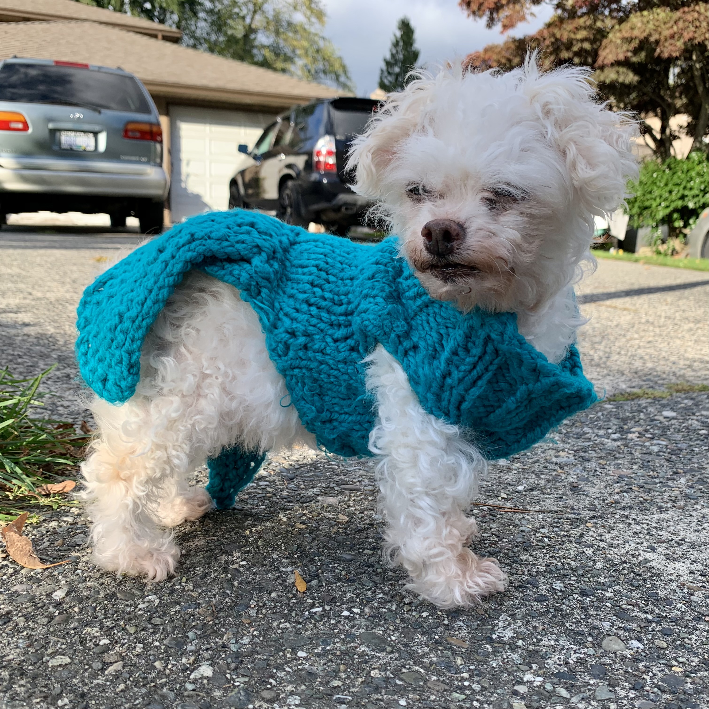
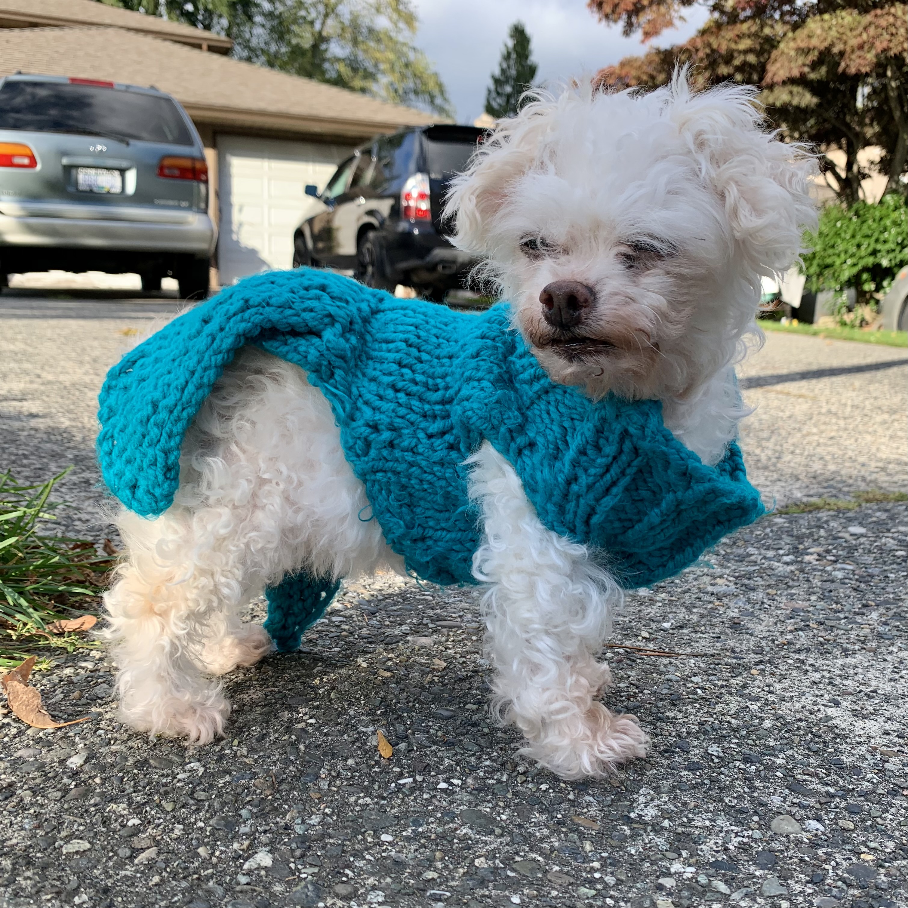
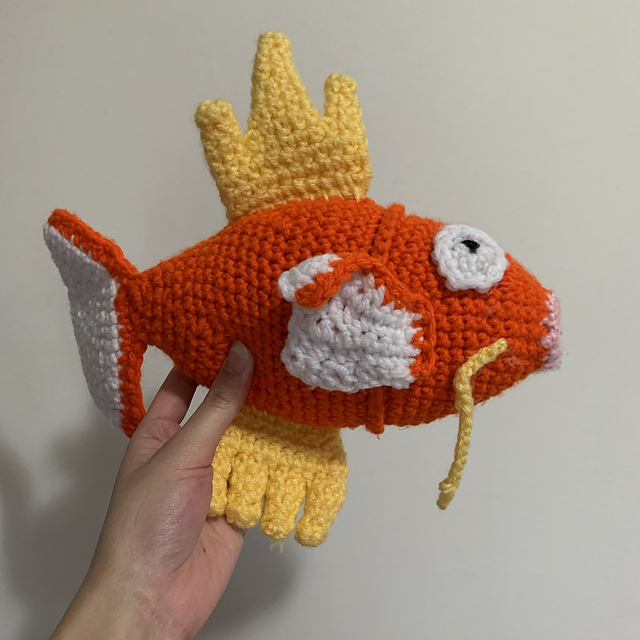
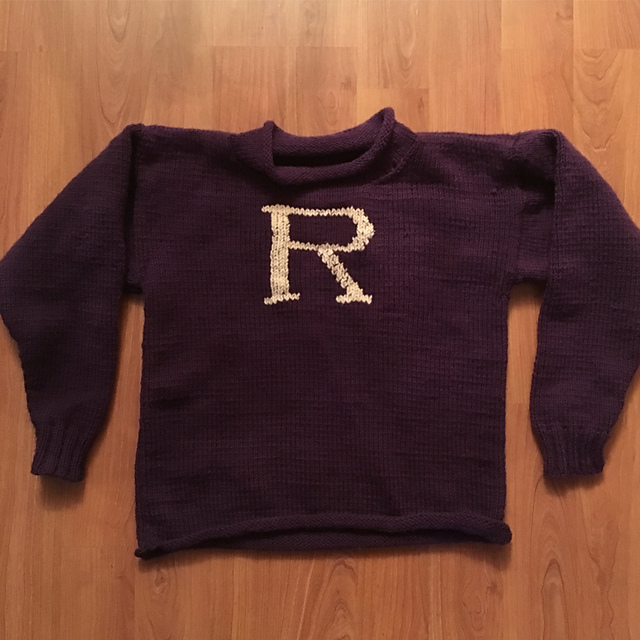
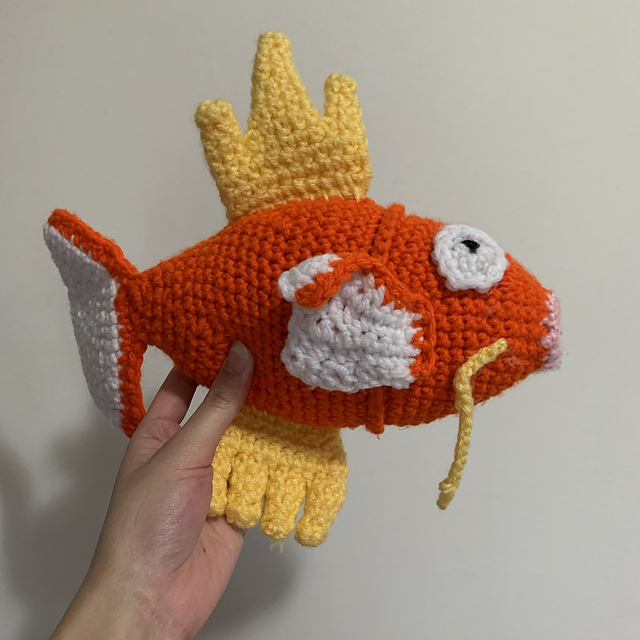
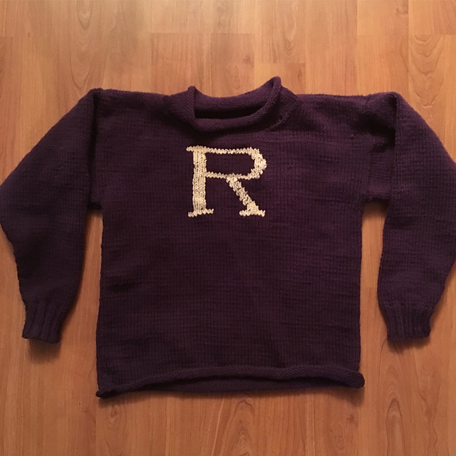

Hobbies
Music
I grew up learning how to sing and play instruments like the piano and the guitar. I still practice these skills by volunteering as a pianist in my church choir. This has given me the opportunity to play at weddings and other events. I have also performed at other local gigs with family members who also enjoy playing music.
Reading
Ever since my childhood, I have been an avid reader. From Percy Jackson and The Hunger Games in elementary school to the Throne of Glass series in high school, I am able to track major events in my life through what I was reading at the time. Using Goodreads, I am able to track my reading progress and set reading goals. Check out some of my more recent favourites!


Knitting and Crocheting
I learned how to knit in my free time when I was in high school. Starting out with small accessories, I quickly was able to take on bigger projects like blankets and sweaters. Soon after, I learned how to crochet. Check out some of the things I made below or at this instagram page!
 


 


